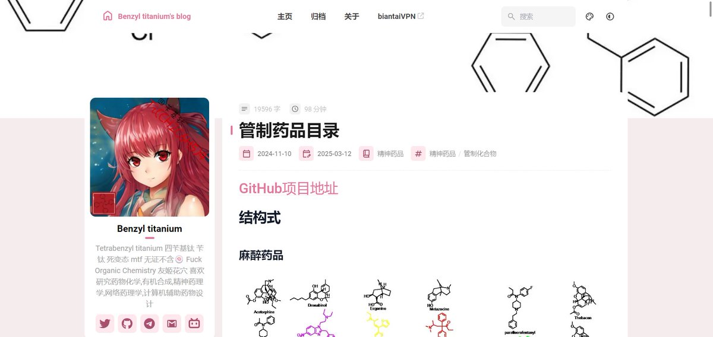

鼠尾草～🌿
@SalviaSWC
和别的国家相比，中国的管制药品清单其实很少，差异的部分主要是策划药。
这不是因为别的，就是因为中国是全球策划药第一大产国。中国政府从策划药厂中获得利益，当然禁得少。
但是对于非策划药，中国对于第一类精神药品和第二类精神药品的管制，可以说是非常混乱和严格，限制人体研究，限制处方数量等

Benzyl titanium
@Benzyl_titanium
中国管制药品目录:https://t.co/GGP1kFqdwA
放在博客上更好浏览 https://t.co/gNfviQdFPS https://t.co/A1AHbjoOOh